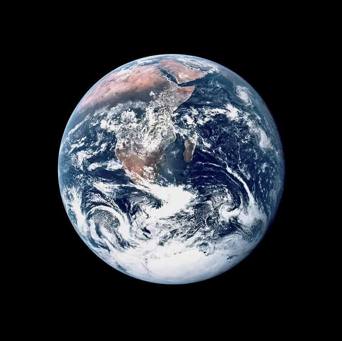
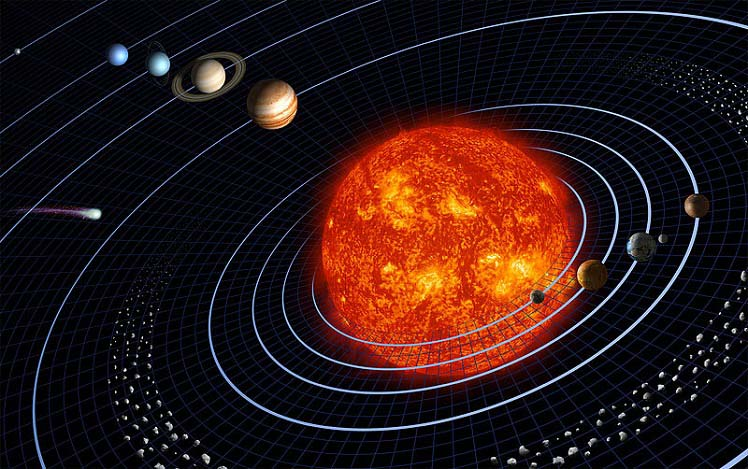
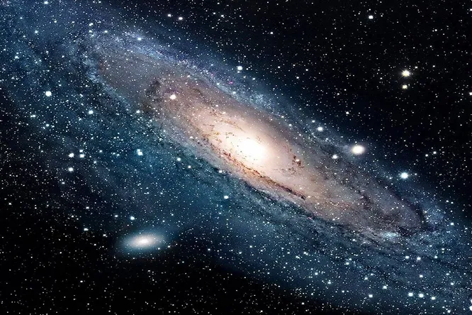
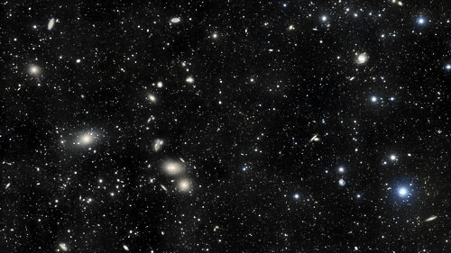
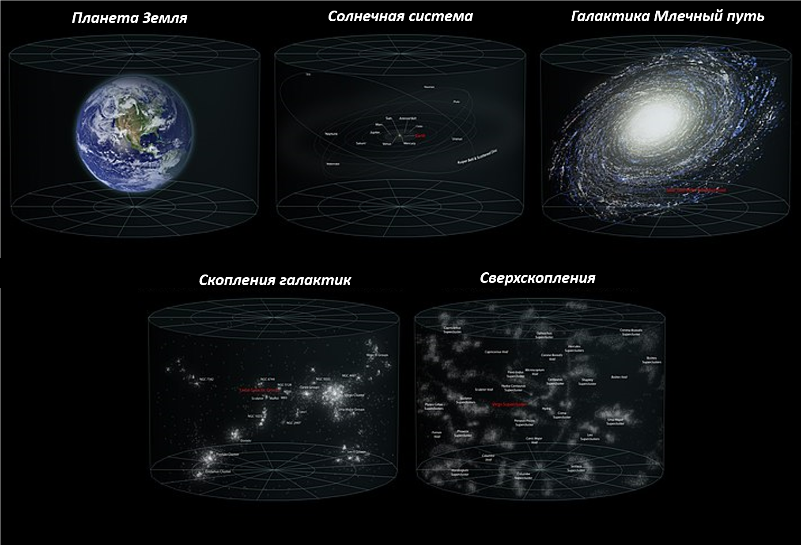

Галактика
Если бы мы, находясь на Земле, попытались представить себе общую структуру Вселенной,
то она предстала бы нам следующим образом:
- Земля

- Солнечная система

- Млечный путь (наша галактика)

- скопления галактик

- сверхскопления

Галактики состоят из звезд, звездных скоплений, туманностей, облаков газа и пыли,
планет, темной материи. Несмотря на то, что галактики состоят из различных объектов,
все эти объекты в той или иной комбинации встречаются в разных частях доступной нам
сегодня Вселенной, что говорит о том, что в этом смысле она однородна и изотропна, и,
хотя и состоит из различных объектов, все они сводимы в единой классификации.
Галактики постоянно находятся в движении, а все объекты внутри них осуществляют
вращение вокруг единого центра. В то же время – более крупные галактики разрастаются и
поглощают малые. Существуют в галактиках и недоступные нам материи и явления,
например, т.н. темная материя (её ещё называют темное вещество) и темная энергия. В
нашей галактике, как и во всей Вселенной, соотношение плотности равно 4/5 темной
материи (вещества) и 1/5 обычного вещества (все те частицы, из которых и состоит
планета Земля, звезды и даже мы сами). Таким образом, когда мы видим на космических
снимках многочисленные яркие точки, это лишь малая часть того, что в действительности
существует в окружающей нас Вселенной. Значительную часть пространства заполняет
темная материя, и по самым смелым подсчетам её масса вместе с массой темной энергией
составляет 90 – 95% от веса всей Вселенной.
По поводу того, что же такое темное вещество существует много споров, однако
одним из самых популярных мнений является позиция, согласно которой темное вещество —
это совершенно особый вид элементарных частиц, непохожий ни на какие другие, привычные
для нас, и недоступный для наблюдения, поскольку эти частицы не участвуют в
электромагнитном взаимодействии. Однако темная материя отчетливо присутствует в
гравитационном взаимодействии, что и дает основания предполагать её существование.